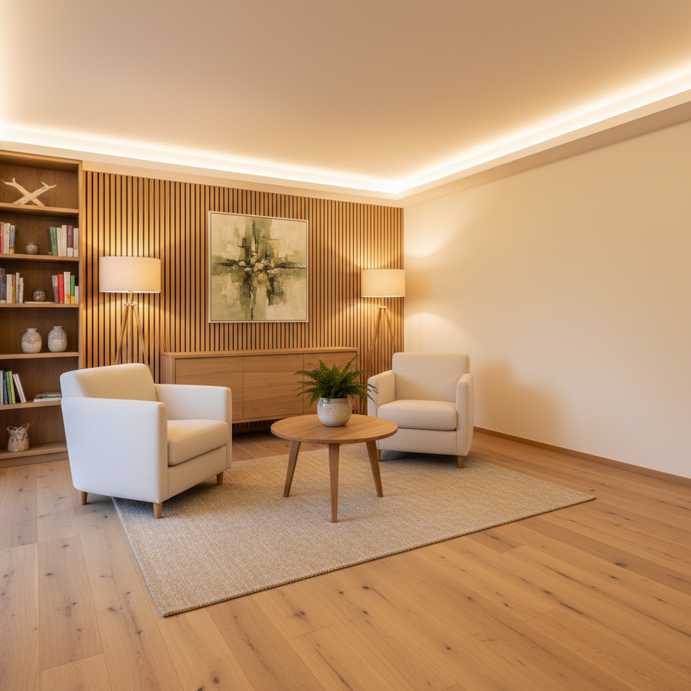

Individuell auf Ihre Bedürfnisse abgestimmt – für Körper, Geist und Seele.
Therapiebereiche im Detail: Ihr Weg zur Balance
TCM & Akupunktur
Die Traditionelle Chinesische Medizin (TCM) ist ein jahrtausendealtes Heilsystem, das den Menschen als untrennbare Einheit von Körper, Geist und Seele betrachtet. Durch Akupunktur werden spezifische Punkte am Körper stimuliert, um Blockaden zu lösen, den Energiefluss zu regulieren und die Selbstheilungskräfte zu aktivieren.
Ganzheitliche Betrachtung des Menschen
Linderung vielfältiger Beschwerden
Stärkung des Immunsystems und der Vitalität
Harmonisierung von Körper und Geist
Hypnose
Hypnose ist ein Zustand tiefer Entspannung und fokussierter Aufmerksamkeit, in dem das Unterbewusstsein besonders empfänglich für positive Suggestionen ist. Sie ist ein kraftvolles Werkzeug, um unerwünschte Verhaltensmuster zu ändern, Ängste zu überwinden und das Selbstvertrauen zu stärken.
Stressmanagement und Burnout-Prävention
Angst- und Panikstörungen
Raucherentwöhnung und Gewichtsreduktion
Stärkung des Selbstbewusstseins

Mentalcoaching
Mentalcoaching ist eine zielorientierte Begleitung, die Ihnen hilft, Ihre mentalen Fähigkeiten zu stärken und Ihr volles Potenzial zu entfalten. Es geht darum, negative Gedankenmuster zu erkennen und in positive, konstruktive Denkweisen umzuwandeln.
Verbesserung der Konzentration
Steigerung der Resilienz und Stressresistenz
Entwicklung von Selbstvertrauen
Klare Zieldefinition und Strategieentwicklung
Systemische Aufstellungen
Systemische Aufstellungen sind eine tiefgreifende Methode, um verborgene Dynamiken in Systemen wie Familie, Partnerschaft oder Beruf sichtbar zu machen und Lösungswege zu finden. Es entsteht ein neues Verständnis für die eigene Position und die Beziehungen zu anderen.
Auflösung von familiären oder beruflichen Verstrickungen
Verbesserung von Beziehungen
Klärung von Lebensfragen
Freisetzung von blockierter Energie
Warum Naturheilkunde bei uns der richtige Weg ist
Individuelle Betreuung
Jeder Behandlungsplan ist einzigartig und auf Ihre Bedürfnisse zugeschnitten.
Sanfte Methoden
Wir setzen auf natürliche Therapien, die Ihren Körper und Geist unterstützen.
Ganzheitlicher Blick
Wir betrachten Sie als Ganzes – Körper, Geist und Seele in harmonischer Einheit.
Erfahrene Expertise
Profitieren Sie von fundiertem Wissen und langjähriger Erfahrung.
Vertrauensvoller Raum
Eine Atmosphäre der Offenheit, in der Sie sich sicher fühlen können.
Nachhaltige Ergebnisse
Wir aktivieren Ihre Selbstheilungskräfte für langfristiges Wohlbefinden.
Finden Sie Ihren Weg zu mehr Gesundheit und Balance
Lassen Sie uns gemeinsam die Ursachen Ihrer Beschwerden ergründen und einen individuellen Heilungsweg für Sie gestalten.